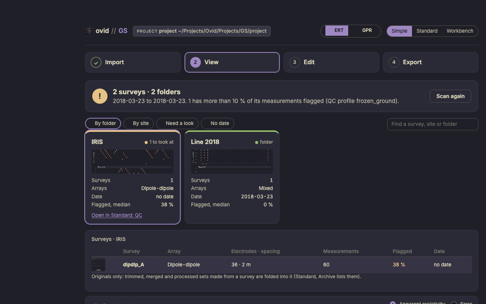
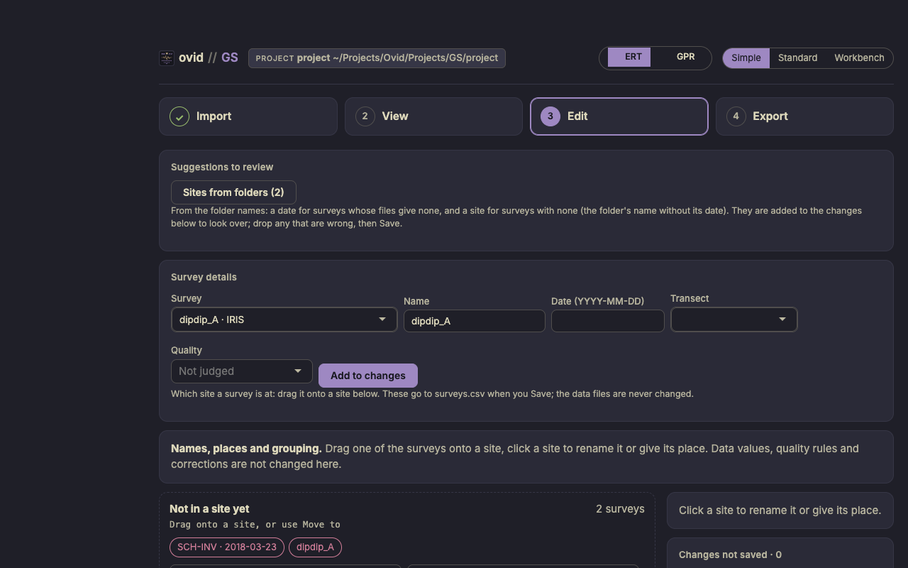
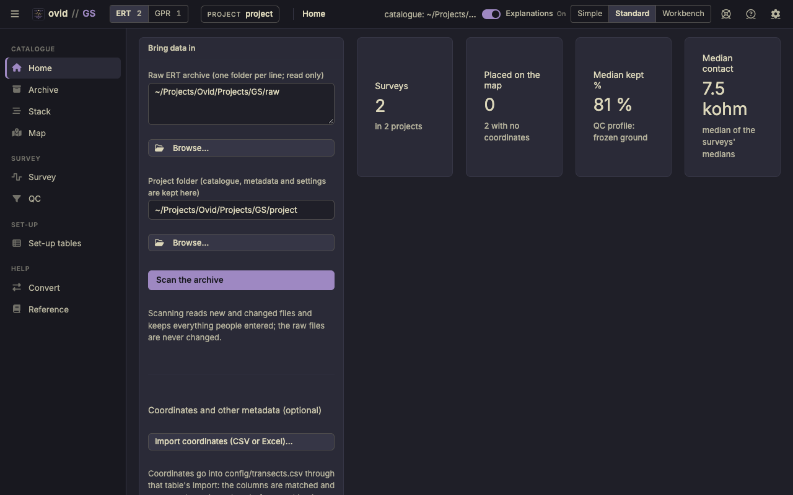

ovid GS quick start
Geophysics surveys: ERT resistivity (AGI SuperSting, IRIS Syscal, EarthImager and Res2DInv sets) and GPR lines (MALA), from a raw archive to a catalogue of every survey with its quality control, pseudosection, map and radargram.
Before you start
- Raw archive. One or more folders of survey files, in any layout: an AGI
.stgwith its.cmdand.crs, IRIS exports, EarthImager trimmed sets, Res2DInv.dat. The archive is read only: raw files are never changed, and quality control only adds flags. - GPR lines. MALA
.rd3or.radwith their.cor(GPS) and.mrkfiles, in folders of their own. - Project folder. Where the catalogue, metadata and settings are kept; never inside the raw archive.
Open the app with Open GS (Mac).command (Windows: Ovid_GS.bat). The figures use the app's test archive (two folders of ERT surveys and one GPR line), not a field campaign.
The Simple view
For someone new to the data, or a field check: four steps in one column, and nothing that changes a data value. A new install opens in Simple; the switch at the top (Simple, Standard, Workbench) moves between the three views of the same project, as does ?ui=simple, ?ui=standard or ?ui=workbench in the address. ERT and GPR beside it switch the side shown.

- Import: the raw ERT archive and the project folder, then Scan. What was read counts the files, the original surveys and the derived sets (trims, merges, subsets, copies) folded into them, the measurements and the GPR lines, with a checklist: files sorted, ERT data read, originals found, GPR lines complete, surveys with a site and with a date. GPR folders are set on the GPR side of the Standard view.
- View (ERT): one tile per folder or site, with a preview, the arrays, the date and the median share of flagged measurements; amber when more than 10 % are flagged under the QC profile. By folder, By site, Need a look and No date pick the tiles; the table under them lists the surveys, and the plot shows a survey's pseudosection. View (GPR): each line's track and radargram, view only.
- Edit (ERT): a survey's name, date, transect and quality; sites from the folder names to look over; drag a survey onto a site, rename a site or give it a place. GPR lines are view only.
- Export: the catalogue report (one page, HTML), and the catalogue tables, the survey data and the previews, each as a .zip.

Changes wait in a list until Save, with Undo and a change log; they go to surveys.csv and sites.csv. The data files are never changed.
The Standard view

The pages on the left: Catalogue (Home, Archive, Stack, Map), Survey (Survey, QC), Set-up (Set-up tables) and Help (Convert, Reference); Settings is the gear. ERT and GPR at the top left switch to the GPR pages (Map and Processing), with the count of each.
- Home: the raw ERT archive and the project folder, then Scan the archive. Scanning reads new and changed files and keeps everything people entered.
- Archive: every survey with its date, project, transect, instrument, array, number of measurements, share passing QC and quality. Filter, search, or select rows and add them to a project or a transect; double-click a row to open it.
- Survey: the pseudosection, with flagged measurements drawn as crosses (one colour per reason), and everything read from the files.
- QC: the limits of the profile and what each flags.
- Map: the transects on satellite imagery or streets, one layer per survey year.
What the values mean
- Geometric factor k = 2π / (1/AM − 1/BM − 1/AN + 1/BN), from the 3-D electrode distances; apparent resistivity ρa = k × V/I (Telford et al. 1990; Loke 2004; Binley and Kemna 2005).
- Pseudo-depth = 0.19 × the distance between the outermost electrodes, below their centre: a plotting convention close to the median depth of investigation (Edwards 1977; Loke 1999), not an image of the ground.
- Flags come from the QC profile's limits (repeat error, current, voltage, V/I, apparent resistivity, contact resistance, outliers, reciprocal error), taken from the EarthImager and SuperSting manuals; the frozen-ground profile is the default. A flag never deletes a measurement.
The GS reference guide gives every rule, statistic and source.
ovid GS. For what GS does to the data and why, see the GS reference guide.